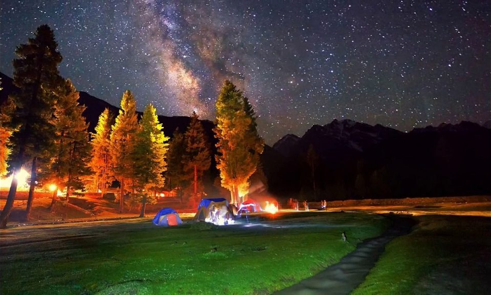

<div class="portfolio-single-load clearfix">
    <div class="custom-full-width-box">
        <div class="custom-container">
            <div class="custom-row align-items-center">
                <div class="custom-image-column">
                    
                </div>
                <div class="custom-text-column">
                    <h2 class="custom-heading">Fairy Meadows</h2>
                    <p class="custom-paragraph">
                        Situated at the base of Nanga Parbat, the ninth highest mountain in the world, Fairy Meadows is a lush alpine meadow renowned for its breathtaking beauty. With a population of around 200, this remote paradise offers stunning views of the surrounding peaks and is a popular starting point for treks to Nanga Parbat Base Camp. Visitors can immerse themselves in the tranquility of nature and witness the majestic Himalayan landscape up close.

                    </p>
                </div>
            </div>
        </div>
    </div><!-- .custom-full-width-box end -->

</div><!-- end single-project -->
